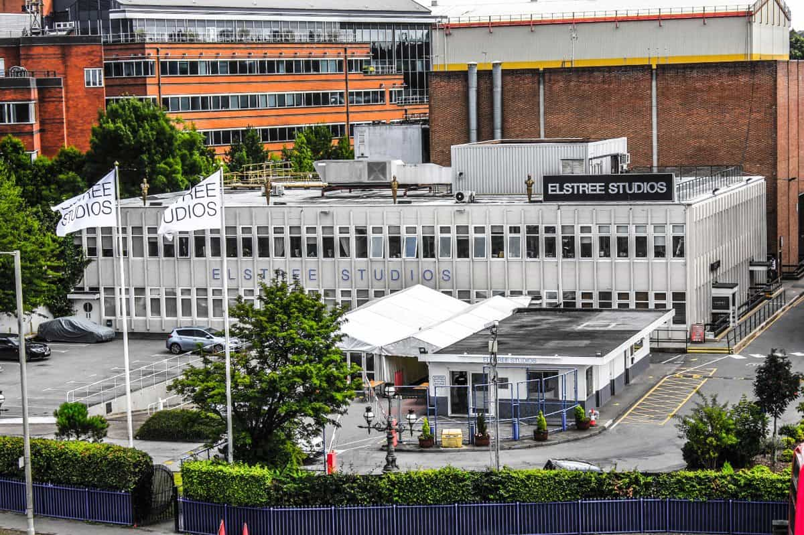
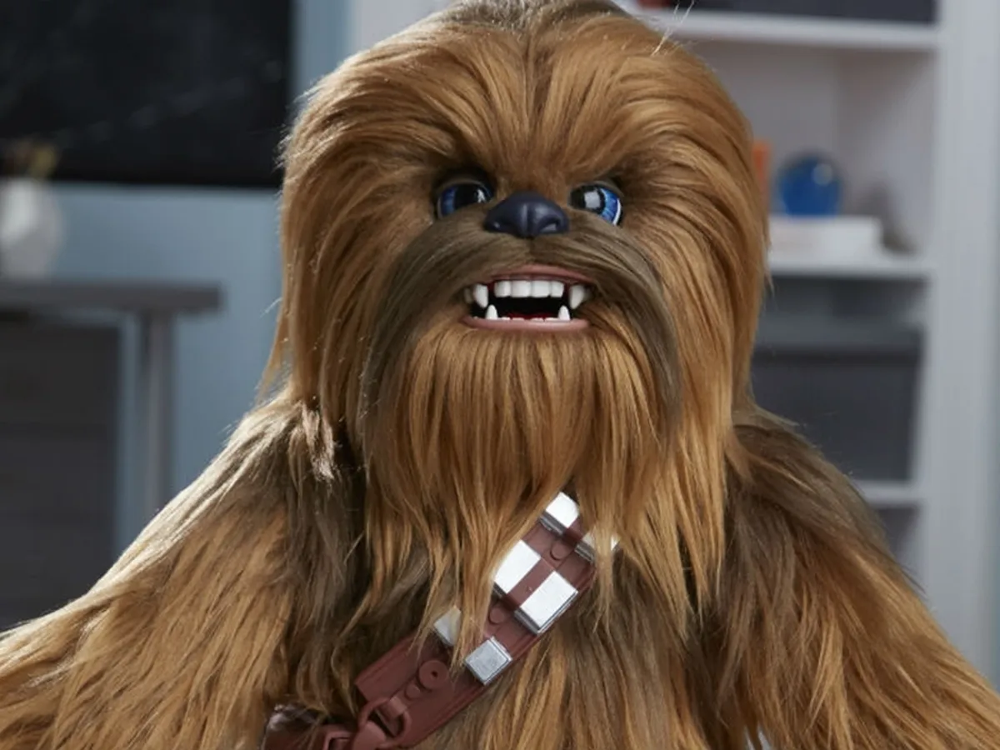

Elstree Studios
-

- Ubicación:Borehamwood, Hertfordshire, Inglaterra.
- Fundación:En funcionamiento desde los años 1920, Elstree ha sido sede de numerosas producciones icónicas.
- Rol en Star Wars: En Una Nueva Esperanza (1977), Elstree Studios fue el lugar principal donde se construyeron y filmaron los elaborados sets interiores, incluyendo:
- El interior de la Estrella de la Muerte
- El interior del Halcón Milenario
- Escenarios clave como el trono imperial, corredores de la nave Tantive IV, y la base rebelde.
Datos curiosos sobre el rodaje
- Modelos físicos y cámara lenta: Las naves espaciales no eran digitales, sino maquetas físicas grabadas con cámaras en movimiento lento para dar sensación de tamaño y velocidad.
- La Estrella de la Muerte era una maqueta gigante: Medía más de 1,80 metros de diámetro, y se filmaron planos detallados desde todos los ángulos para las escenas de batalla. 
- Sonidos creados con objetos reales: El famoso sonido del sable láser se hizo combinando el zumbido de un proyector de películas con el ruido de un micrófono pasando frente a un televisor viejo. El rugido de Chewbacca es una mezcla de osos, leones y morsas.